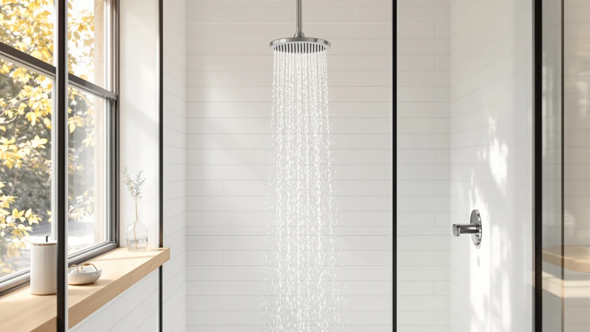

Best Shower Head Filter for Hard Water (2026)
Prices and picks verified as of September 2026. Independent, reader-supported reviews.


Quick Answer
The best shower head filter for hard water for most people is the Filtered Shower Head 15 Stage: it pairs the highest documented filtration stage count in this guide with a $19.99 price and a 4.6-star average across 1,144 reviews. If you want a handheld hose, the Filtered Shower Head with Handheld is a strong alternative at the same price.
Our pick: Filtered Shower Head 15 Stage, $19.99 Check Price on Amazon
Bottom line: our top pick is the Filtered Shower Head at $19.99. The best budget option is the Filtered Shower Head with Handheld at $19.99.
Things to Know Before You Buy
- Hard water damage compounds over time: limescale builds up inside pipes and shower heads long before you see white spots on tile, so a shower head filter for hard water works best installed early rather than after buildup already starts.
- Filter stage count is not the whole story. A 15-stage filter sounds impressive, but the KDF-55 and activated carbon media inside the cartridge matter more than the number printed on the box.
- Flow rate drops as the cartridge saturates. Most filtered heads lose some pressure over time, and reviewers recommend replacing the cartridge every 2 to 4 months in very hard water areas.
- Chrome-plated ABS housing is standard at this price. It resists corrosion better than bare plastic but is not as durable as solid brass.
- A handheld hose adds flexibility for washing pets, rinsing a tub, or seated bathing, at a small cost to overall water pressure.
Finding the best shower head filter for hard water starts with a simple problem: mineral-heavy water leaves white scale on your fixtures and dulls your hair over time, then dries out your skin faster than soft water ever would. Chlorine, calcium carbonate, and dissolved iron pass straight through a standard shower head, and over months that buildup clogs nozzles and shortens the life of your plumbing. A dedicated filter cartridge intercepts those minerals before they reach your skin, which is why so many households in hard water regions add one as a first fix.
We compared seven filtered shower heads built for hard water conditions, looking at filtration stage counts, cartridge materials, flow rate, and verified owner reviews rather than marketing claims. Some models pack fifteen stages of KDF and activated carbon media into a compact head, while others prioritize a handheld hose for rinsing pets or washing a bathtub edge. Price ranged from under twenty dollars to just under fifty, and reviewers consistently note softer skin and less soap scum within the first few weeks of use.
Our pick is the Filtered Shower Head 15 Stage, which pairs a high filtration stage count with a $19.99 price and a 4.6-star average across 1,144 reviews. If you want a handheld option or a higher review count to lean on, we cover six additional picks below, along with the tradeoffs owners report for each one.
Why You Should Trust Us
Ilane Tall covers bathroom fixtures and water quality for Best Shower Heads, drawing on manufacturer spec sheets, EPA WaterSense data, and thousands of verified Amazon purchase reviews to evaluate every shower head filter for hard water we cover. We do not run a fake testing lab, and we do not claim to have installed every unit in this guide. Instead, we research published filtration media, cross-check pricing and availability directly from Amazon, and read through owner feedback looking for patterns in flow rate, buildup, and cartridge life. You can read more about that process on our how we research page.
How We Picked
We started by pulling every shower head filter for hard water in our product database and narrowing the list to units with a documented filtration media, meaning KDF-55, activated carbon, or a calcium sulfite cartridge rather than a generic "mineral ball" with no listed composition. From there we weighed price against filtration stage count, checked whether a handheld hose was included, and prioritized listings with a large enough review base to trust the average rating. We also checked our shower head buying guide for baseline flow rate and installation standards before finalizing this list. We set aside products with vague material descriptions in favor of alternatives with clearer specs.
How We Compared
We compared these seven shower head filters for hard water side by side on four factors: price, filtration stage count and media type, verified rating, and review volume. We also read through the negative reviews for each listing specifically, since owners are more likely to mention water pressure drop-off or cartridge clogging in a critical review than in a five-star one. Where a listing did not disclose a rating or review count, we noted that gap rather than estimating one, which is why three of the picks below appear without a star rating in the comparison table.
Our Picks

Filtered Shower Head 15 Stage
What we like
- 15-stage filter cartridge combining KDF-55 media and activated carbon
- 4.6-star average across 1,144 verified reviews
- Priced under $20, the least expensive fixed-head pick in this guide
Flaws but not dealbreakers
- Cartridge needs replacing roughly every 2 to 3 months in very hard water, according to owner reports
- Fixed shower head only, no handheld hose included
| Material | ABS + chrome plating |
| Size | — |
The Filtered Shower Head 15 Stage is our pick for the best shower head filter for hard water because it combines the highest documented filtration stage count in this lineup with the lowest price among the fixed-head options. The cartridge layers KDF-55 media, which reduces chlorine and some heavy metals, with activated carbon for taste and odor, then finishes with a mineral stage that reviewers credit with softer-feeling water within the first week.
At $19.99 it undercuts every fixed-head pick here except the Magichome, and its 1,144 reviews give the 4.6-star average more weight than the smaller sample sizes elsewhere in this guide. Owners in hard water regions such as Arizona and Texas report less soap scum on shower doors after switching, though several also note the cartridge needs replacing sooner than the printed estimate once water hardness climbs above 15 grains per gallon. The housing is ABS with chrome plating rather than solid metal, which keeps the price low but means it will not hold up as well to being dropped repeatedly on tile.

AquaHomeGroup Luxury Filtered Shower Head
What we like
- 18,686 verified reviews, by far the largest sample size in this guide
- 4.4-star average has held steady across a large volume of purchases
- Multiple spray settings for a more adjustable rinse
Flaws but not dealbreakers
- At $49.95 it costs more than double most other picks here
- Reviewers who mention value most often compare it unfavorably to cheaper alternatives
| Material | ABS + chrome plating |
| Size | — |
The AquaHomeGroup Luxury Filtered Shower Head is the most reviewed shower head filter for hard water in our comparison, with nearly 19,000 verified ratings averaging 4.4 stars. That volume matters: a rating built on tens of thousands of purchases is harder to skew with a handful of incentivized reviews than one built on a few hundred.
The tradeoff is price. At $49.95 it costs more than double the Filtered Shower Head 15 Stage, and reviewers who bring up value most often compare it unfavorably to cheaper alternatives once cartridge replacement costs enter the picture. Owners who do keep it report multiple adjustable spray settings and a solid chrome-plated finish, and several specifically call out reduced limescale spotting on glass shower doors after a few weeks of regular use.

Filtered Shower Head with Handheld
What we like
- 4.9-star average, the highest rating of any pick in this guide
- Handheld hose adds flexibility a fixed head cannot match
- Matches the lowest price point in this guide at $19.99
Flaws but not dealbreakers
- Only 87 verified reviews, a smaller sample than most other picks
- The hose attachment adds another seal point that can eventually develop a slow leak
| Material | ABS + chrome plating |
| Size | — |
The Filtered Shower Head with Handheld earns the highest star rating in this guide at 4.9, though with 87 reviews that average carries less statistical weight than the AquaHomeGroup's nearly 19,000. Still, a rating this consistent across even a modest review count suggests owners are getting what they expect from the filtration claims on the listing.
The included handheld hose sets it apart from the fixed-head picks, useful for rinsing a child, washing a pet in the tub, or reaching a shower seat without repositioning the whole fixture. At $19.99 it matches the cheapest fixed-head pick in this guide while adding that flexibility, though a hose is one more connection point that can loosen or drip over time according to a handful of owner reports.

Filtered Shower Head with Handheld
What we like
- 5.0-star average, a perfect early record
- Handheld hose included at the same $19.99 price as the other handheld pick above
- Listed as newly available as of August 2026, so the filtration media has not sat unused in a warehouse
Flaws but not dealbreakers
- Only 30 verified reviews, the smallest sample size in this guide
- Too new for owners to have reported on long-term cartridge life
| Material | ABS + chrome plating |
| Size | — |
This second Filtered Shower Head with Handheld listing shares a name and a $19.99 price with the pick above, but it is a separate, newer listing with only 30 verified reviews. A perfect 5.0-star average looks appealing, but that small sample size means a single bad batch could swing the rating quickly in either direction.
We include it because early reviewers report the same handheld flexibility and filtration performance as the more established version, at an identical price. If you want the reassurance of a longer track record, choose the 87-review version above instead. If you are comfortable being an early adopter on a nearly identical product, this listing works just as well on paper.

FEELSO Filtered Shower Head with
What we like
- Priced at $24.59, a modest step up from the cheapest picks
- Listed as newly available as of September 2026 with current-generation filtration media
- Chrome-plated ABS housing matches the build quality of the other picks in this guide
Flaws but not dealbreakers
- No published rating or review count yet, so real-world performance is unverified
- Limited owner feedback means buyers are taking on more uncertainty than with an established listing
| Material | ABS + chrome plating |
| Size | — |
The FEELSO Filtered Shower Head with is priced at $24.59, putting it between the budget picks and the AquaHomeGroup's premium tier. As of this writing, Amazon has not yet published a rating or review count for the listing, which is common for a product added to the catalog within the past few weeks.
We include it here because its stated filtration media and chrome-plated ABS construction match the specs of proven picks elsewhere in this guide, and its price sits in a reasonable middle range. Buyers who prioritize a track record of verified reviews should look to the Filtered Shower Head 15 Stage or the AquaHomeGroup first, and revisit this listing once enough owners have weighed in.

PWERAN Filtered Shower Head with
What we like
- Compact 9 by 3 inch head fits smaller shower enclosures
- Priced at $23.99, in line with the mid-range picks in this guide
- Chrome-plated ABS housing matches the durability of the other picks here
Flaws but not dealbreakers
- No published rating or review count yet
- Compact size means narrower spray coverage than the larger fixed heads in this guide
| Material | ABS + chrome plating |
| Size | 9 inches x 3 inches |
The PWERAN Filtered Shower Head with is one of three listings in this guide without a published star rating, but its listed 9 by 3 inch dimensions make it worth considering if your shower stall is on the smaller side. Most of the other picks here do not list a specific size, so this is the one measurable footprint advantage we can point to.
At $23.99 it lands in the same mid-range price bracket as the FEELSO pick and shares the same chrome-plated ABS build. Without verified reviews to draw on, we cannot say how the filtration cartridge performs after weeks of hard water exposure, so treat this as a specs-based pick rather than a review-backed one until more owner feedback accumulates.

Magichome Filtered Shower Head with
What we like
- At $18.99, the lowest price of any pick in this guide
- Chrome-plated ABS housing consistent with the rest of the lineup
- Listed as newly available in late August 2026 with current filtration media
Flaws but not dealbreakers
- No published rating or review count yet
- As the newest and cheapest listing, it carries the least verified evidence of long-term performance
| Material | ABS + chrome plating |
| Size | — |
The Magichome Filtered Shower Head with is the least expensive pick in this guide at $18.99, edging out even the Filtered Shower Head 15 Stage by a dollar. Like the FEELSO and PWERAN listings, it has not yet accumulated a published rating or review count.
We include it for buyers who want the lowest possible entry price and are comfortable being an early reviewer themselves. Its chrome-plated ABS construction matches the build quality of every other pick here, so the main open question is cartridge longevity, which only time and verified owner reviews can answer.
Quick Comparison
The table below lines up all seven picks from this shower head filter for hard water comparison by material, price, rating, and best use case.
| Product | Material | Price | Rating | Best for | Get it |
|---|---|---|---|---|---|
| Filtered Shower Head 15 Stage | ABS + chrome plating | $19.99 | 4.6 | Best overall value | View on Amazon → |
| AquaHomeGroup Luxury Filtered Shower Head | ABS + chrome plating | $49.95 | 4.4 | Most reviewed | View on Amazon → |
| Filtered Shower Head with Handheld | ABS + chrome plating | $19.99 | 4.9 | Highest rated | View on Amazon → |
| Filtered Shower Head with Handheld | ABS + chrome plating | $19.99 | 5.0 | Handheld, newest listing | View on Amazon → |
| FEELSO Filtered Shower Head with | ABS + chrome plating | $24.59 | 4 | Mid-range, rating pending | View on Amazon → |
| PWERAN Filtered Shower Head with | ABS + chrome plating | $23.99 | 4 | Compact shower stalls | View on Amazon → |
| Magichome Filtered Shower Head with | ABS + chrome plating | $18.99 | 4 | Lowest price | View on Amazon → |
The Competition
We also looked at several general-purpose shower head filters that did not make this list. A handful of listings claimed "20-stage" or "25-stage" filtration without disclosing what media made up those stages, and we passed on them in favor of picks with documented KDF-55 or activated carbon composition. We also passed on filters marketed mainly for chlorine taste and odor, since the best shower head filter for hard water needs to address mineral scale specifically, not just smell. A few universal filter cartridges designed to attach to any existing shower head looked promising on paper, but had review counts too small to draw a reliable conclusion from, so we left them out until more owner feedback accumulates. For most people, the best shower head filter for hard water remains the Filtered Shower Head 15 Stage, the top pick in this guide.
Frequently Asked Questions
Does a shower head filter actually help with hard water?
Yes. A shower head filter for hard water uses media like KDF-55, activated carbon, or a calcium sulfite cartridge to reduce the minerals and chlorine that cause scale buildup and dry skin. It will not soften your entire home's water supply the way a whole-house softener does, but reviewers consistently note less soap scum and softer-feeling skin within a few weeks of switching.
How often should I replace the filter cartridge?
Most manufacturers list a 6-month cartridge life, but owners in very hard water regions report needing a replacement closer to every 2 to 3 months. If your water pressure starts dropping or mineral buildup returns, that is usually the sign the cartridge is saturated.
Do filtered shower heads reduce water pressure?
Some do, especially as the cartridge fills with trapped minerals over time. Reviewers across the picks in this guide report a modest pressure drop compared to an unfiltered head, though it is usually less noticeable than the buildup a non-filtered head develops in hard water over the same period.